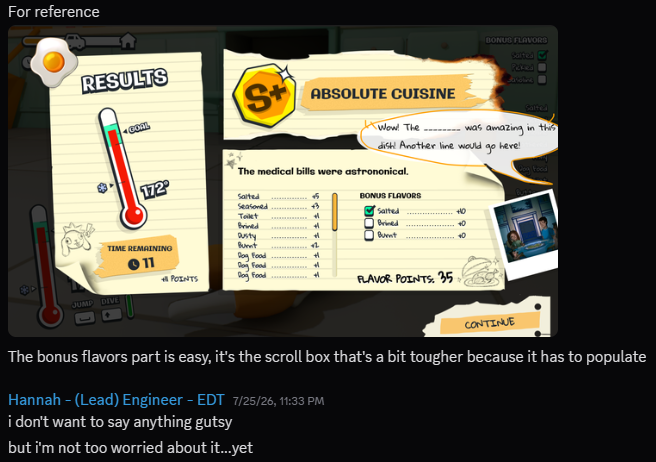
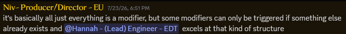

Go Cook Yourself
From July 22nd to July 26th, I once again participated in the GMTK Game Jam with a crew of 18 other incredible creatives to make a game where you play as a frozen chicken (to be cooked). And before you ask, yes, really, absolutely. The theme was "countdown" (which was very comedic when being announced. The first countdown is to the reveal, the second you go "okay", and by the third you go "wait a minute") and after an incredible brain storming exercise led by Marc the Design Lead, we landed on a chicken who wished to cook itself before the family got home to eat it. Taking inspiration from the likes of "I Am Bread," the player is set to explore the house, finding things to flavor it on top of reaching a goal temperature before landing on the plate to be deemed as done.
Working as Lead Engineer on these never comes short of bringing me joy. The hours spent at the computer to bring to life the mechanics the design crew dreamed up are some that I feel content looking back on. I've talked about it recently, but perhaps the best thing these game jams do is serve as the grand rival to my perfectionist side. If the team was to wait until everything was absolutely perfect before running playtests, or even more, submitting the full game-we'd never get any kind of feedback. There'd be no iteration outside of what we were able to think up of in-house, and no way of telling what's intuitive or fun to the intended audience. The whole point is to have a product and make the best of it. When it comes to creative works, when is the first pass ever the most complete one?
Here's what I got up to this time around:
-
Player UI - the first thing I got up to while other focuses were being fleshed out was following an initial mockup for the player UI. It wouldn't look as pretty as it would by time Sam dove into it, but my main wish was for all the elements to be there. I was able to get the main timer going straight away (displaying through text and a progress bar) as well as a function to call for the chicken's temperature increasing. The hope was to send just how much it would change through a parameter, which made later developments easier.
-
Interactables - the big one. At first, it was a simple matter of setting up the parent class. Would it be an object that impacted flavor, temperature, or both (you can already imagine I used my favorite for this. DATA TABLES)? Which flavor would it add? How much would it change the temperature by? Would it be a one time use? What was the countdown to using it again? There had originally been another countdown to account for an interactable to warm back up, but that was deemed as more confusing in practice than it had been on paper.
Very fortunately, once I had the layout and base functionality, a lot of the time spent was filling things in based on the Google Sheet the design team had filled out. And it would make editing those values later on simple, when it was deemed something took too long or didn't heat as much as it felt like it should.
These would also determine the possible bonus flavors for bonus points for the final grade, updating the checklist in the top left corner accordingly. And finally, the lovely voice lines associated with each, epically delivered by Jacob to give unexpected and irreplacable character to a frozen chicken destined to cook.
It was fun putting all the meshes together so that it followed the parent class. If it had to be turned on, then it would have a spot the player would hit, separate from where they would stand to get the heat. (Though the stove has a bit of overlap that I didn't think about until people were saying there was a problem post-submission time. The one burner is very close to the knob you'd hit, and because of the order of the checks I'd set up was more geared for hitting the activation first and then stepping into the space, if you're already in the space and do not leave/re-enter, you won't have the boolean that you activated it. It would be an easy fix by using something like an event dispatcher to call either on the overlap I already had it at, or as a check in the aforementioned case.)
-
The Final Report - similarly to my barebones knockout of the main player UI, to help reduce the load off Sam, I put together the rundown of the final report. Complete with everything that needed to be filled out, so that all he'd have to do is make it look good in the end. (I would jokingly say "no pressure," but he always makes it look easy because he's magic or something.) It was all a matter of grabbing information that existed elsewhere and conglomerating all into one thing to determine the set score. Bonus flavors, time remaining, and final temperature would come from the player UI. I'd stored the flavors collected by the player in the player BP (and you already know they each had scores linked to them. By DATA TABLES!), leaving the final thing to be the flavor points which was a measly summation to do.

- That's not to leave out the smaller details. Some flavors need you to have something else to acquire them, thus clearing the prerequisites out for the greater whole. You can't have the same flavor more than once. The music updates in the last 30 seconds to make you FEEL THE PRESSURE! Let's not forget merge conflict fun...
But to say we cooked would be a far cry from a lie. The motivation doing things like this gives me, even a month later just to talk about, does not go unnoticed or unappreciated. While it may not have been visible here (yet), the progress I've made on other matters is insane. Character art terrifies me, by the way, but I'll at least have reference images for someone who knows more of what they're doing...some day.
For now, here's a sneak peek. While you're waiting for it, you should go prove you're a winner chicken dinner! I'd love to hear what score you managed to get.
